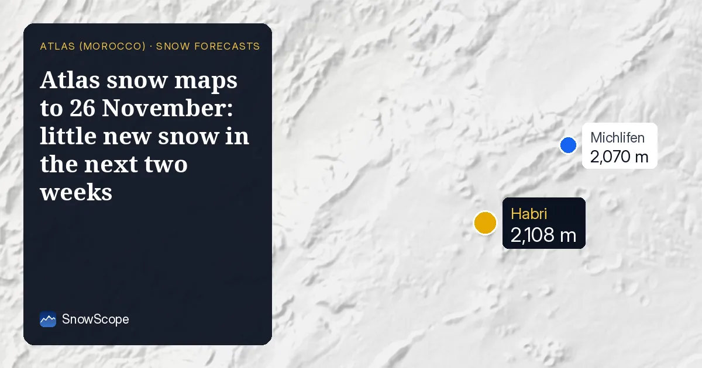
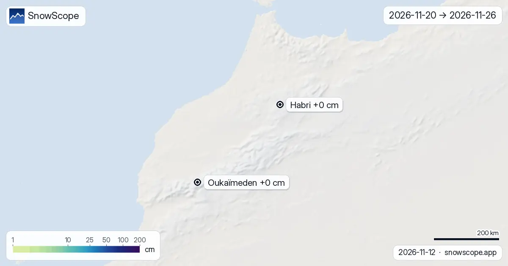
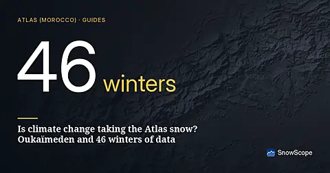

Atlas snow maps to 26 November: little new snow in the next two weeks
The two-week outlook for the Atlas (Morocco) from 13 to 26 November shows a dry pattern. Across the region, the mountains will see almost no new snow over these 14 days. Neither Habri nor Oukaïmeden nor any of the terrain above 1,000 m is forecast to gain measurable snow.
See the live snow forecast for Habri in the SnowScope appSnow depth, powder alerts and the 3D map, free.
What each resort can expect
Habri will remain dry through the fortnight, with no new snow forecast on its upper slopes. Oukaïmeden, the region's highest resort, faces the same picture: 0 cm across all 14 days. Neither resort sees a single day with 5 cm or more of new snow.
This dry spell reflects weak weather systems in the region for mid-to-late November. The two global forecasts (ECMWF and GFS) agree closely on this outlook, leaving little uncertainty.
| Resort | Snow depth | New snow, 72 h | Coming, next days | Top |
|---|---|---|---|---|
| Habri | 0 cm | 0 cm | 0 cm | 2,108 m |
| Oukaïmeden | 0 cm | 0 cm | 0 cm | 3,258 m |

Breaking it into weeks
If the first week (13 to 19 November) sees any new snow at all across the mountains, it will carry about 11 per cent of the two-week total. The second week (20 to 26 November) would hold the remainder, but that remainder is negligible. In practical terms, both weeks stay very quiet.
This split matters for planning: the second week offers no hope for a turnaround either, so decisions made early will not be overturned by late-November snow.

Snow by elevation: the height factor
Height usually decides whether a storm brings snow or rain, and whether snow persists. In the Atlas over these 14 days, the picture is uniform: no layer of the mountains—from 1,000 m to 4,500 m—is forecast to receive new snow. Even the highest peaks, where temperatures stay cold and snow should stick, show nothing.
This rules out the possibility that mid-mountain slopes (around 2,000–3,000 m, typical ski terrain) will catch dry spells while peaks stay buried. All heights face the same dry outlook.

No standout snow days
Across all 14 days from November 13 to 26, no single day delivers 5 cm or more to any of the terrain we follow.
This absence of threshold days means no rapid base-building, no rapid snow-surface refresh, and no days when rocks become buried on shallow upper slopes. Skiers planning a trip will face whatever snow remains from earlier in the season.
What the maps show
Three maps accompany this forecast: one for the full 14 days, one for the first week alone, and one for the second week. The colour scale runs from light green (little or no new snow) through darker greens to blues and purples (heavier falls). These maps read the middle value from the two forecasts; the range between them shows how certain the forecast is.
When you see wide ranges in later forecasts, the Forecasts disagree more, and that uncertainty widens your planning margin. Fresh maps arrive each morning.
What dry snow means on the ground
When new snow does not fall, the existing snowpack stays exposed to sun and wind. In November at high Atlas elevations, the sun is weaker but still active on south-facing slopes. Shady north-facing terrain at 3,000 m and above will hold older snow longer, while sunny slopes will thin.
This is why we always say: check the shade first. Snow lasts where the sun cannot reach it. If you plan a trip, ride north faces and high terrain in the first part of the day, before the afternoon sun strengthens.
Tips for skiers
- Use the first week (13–19 November) as your planning anchor. The second week offers no snow improvement, so do not hold out for it; decide early.
- The 0 °C level (the height where rain becomes snow) can shift by several hundred metres between forecasts, changing which terrain sees snow. Check the map again the day before you travel.
- Before any off-piste or touring plan, read the official avalanche bulletin for the region. Dry spells can hide instability in older snow layers.
- These maps show terrain snow depth, not resort status. Confirm that lifts are running and that the resort is open before you book a trip.
About these numbers
Resort snow depths are the deepest snow on the resort's upper slopes on the date shown; they are estimates for an area, not a measurement at one point. Forecasts can change. Always read the official avalanche bulletin before going off-piste.
Cite this report
For research, teaching or the press: the numbers and charts are free to reuse under CC BY 4.0 with this citation.
SnowScope (2026), Atlas snow maps to 26 November: little new snow in the next two weeks, https://snowscope.app/blog/en/2026/11/atlas-morocco-2-week-snow-forecast-maps-12-november-2026.html, accessed 2026-11-12
SnowScope (Atlas Labs). (2026, November 12). Atlas snow maps to 26 November: little new snow in the next two weeks. SnowScope snow reports. https://snowscope.app/blog/en/2026/11/atlas-morocco-2-week-snow-forecast-maps-12-november-2026.html
BibTeX
@misc{snowscope2026atlasmorocco2weeksnowfor,
author = {{SnowScope (Atlas Labs)}},
title = {Atlas snow maps to 26 November: little new snow in the next two weeks},
year = {2026},
month = nov,
howpublished = {\url{https://snowscope.app/blog/en/2026/11/atlas-morocco-2-week-snow-forecast-maps-12-november-2026.html}},
note = {Published 2026-11-12 18:20 UTC; accessed 2026-11-12}
}· CC BY 4.0 · Methods, data and tools →
Habri: snow and temperature by height, this winter vs last (tools) →
Follow Habri
Free: a message when fresh snow is coming, and the forecast every morning.
More snow reports

December brings only 18 cm typical depth at mid-mountain in Oukaimeden, versus 53 cm in March. Early season is thin but possible. Data 13 November 2026.

Only 8 cm of snow sits on the highest Atlas peaks today. No snow at any ski resort. Cover is shrinking fast through mid-November.

Above 2,500 m in Morocco, Atlas winters have lost 8.8 snow days per decade since 1980. SnowScope analysed 46 seasons.